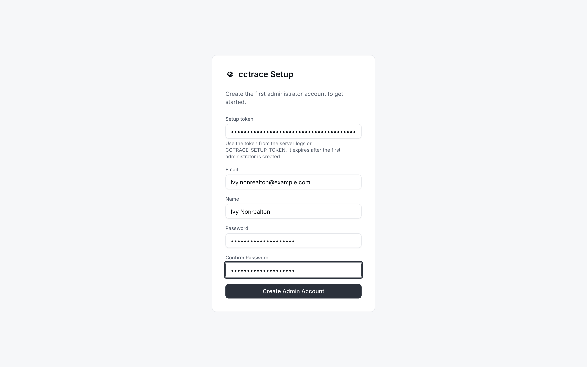
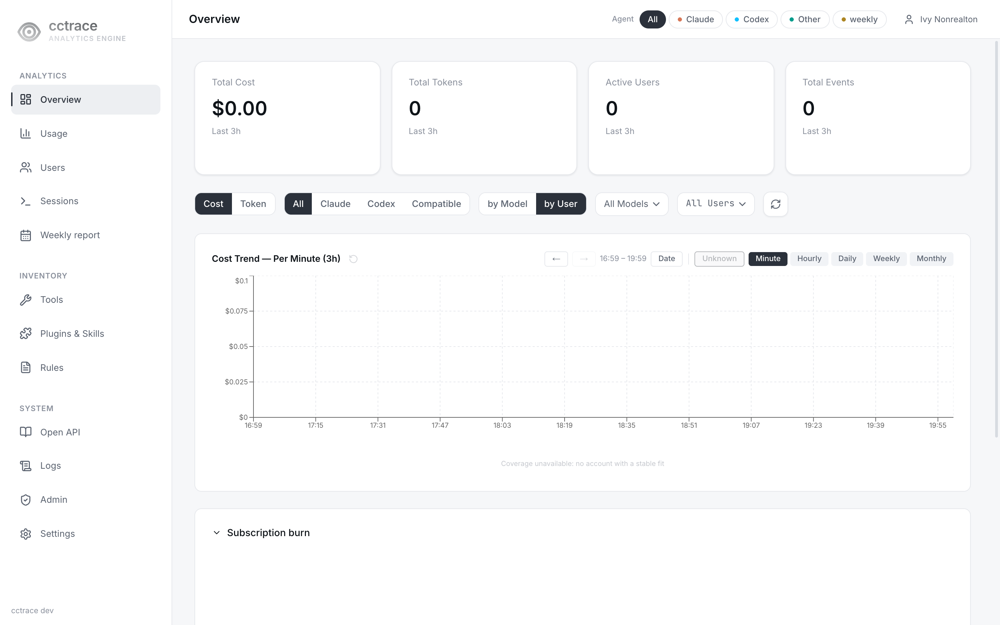
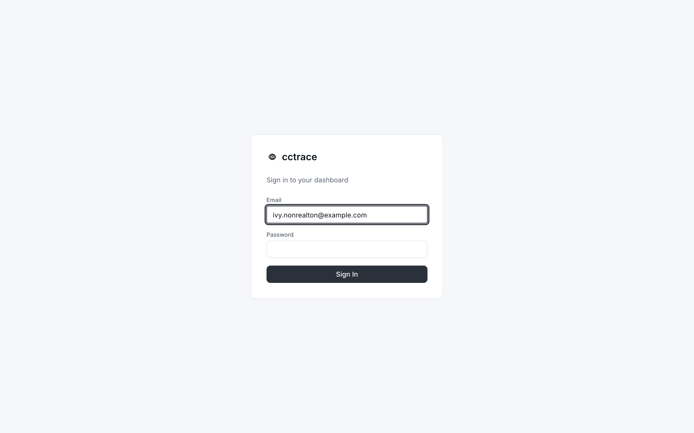

첫 관리자¶
셋업 토큰으로 /setup에서 첫 관리자 계정을 만들고 /login으로 로그인하는 절차.
셋업 토큰 확보¶
/setup은 셋업 토큰이 있는 요청만 받는다. 토큰은 서버가 시작할 때 정해진다.
| 시작 시점 상태 | 토큰 |
|---|---|
대시보드 사용자 없음, CCTRACE_SETUP_TOKEN 설정됨 |
CCTRACE_SETUP_TOKEN 값. 로그에 출력 안 됨 |
대시보드 사용자 없음, CCTRACE_SETUP_TOKEN 비어 있음 |
무작위 토큰을 서버 로그에 한 번 출력. 첫 관리자가 생길 때까지 시작할 때마다 새로 생성 |
| 사용자가 이미 있음 | 없음. 셋업 비활성 |
생성된 토큰이 찍히는 줄:
[cctraced] initial administrator setup token: <token>

서버 설치의 Docker Compose 스택에서는 다음으로 확인.
$ docker compose --env-file deploy/.env -f deploy/docker-compose.yml logs cctraced
시작할 때 사용자 수를 세지 못하면 서버는 [cctraced] setup disabled: user count failed: ...를 남기고 셋업을 거부한다. 데이터베이스에 접속되는 상태에서 cctraced를 다시 시작하면 된다.
계정 생성¶
- 대시보드 열기: 서버 호스트에서는
http://127.0.0.1:8080, 프록시를 쓰면https://cctrace.company.example같은 주소. 사용자가 없으면 대시보드가/setup으로 보냄 -
양식 입력
필드 값 Setup token 앞 절의 토큰 Email 로그인 주소. 예: alice@example.comName 표시 이름 Password, Confirm Password 8자 이상 
-
Create Admin Account 선택.
admin역할 계정 생성 후 로그인 상태로 대시보드 열림
사용자가 한 명이라도 생기면 /setup은 /login으로 넘어가고 이후 셋업 요청에는 서버가 setup already completed로 응답한다.
셋업 실패 시¶
| 메시지 | 원인 |
|---|---|
Setup token is invalid or setup is disabled. ... |
서버가 HTTP 403으로 거부. 대개 토큰이 틀렸거나 이전 시작 때 생성된 토큰. 최신 로그의 토큰 사용 |
setup already completed |
사용자가 이미 있음. /login에서 로그인 |
이 페이지는 브라우저 출처 검사에 걸린 경우를 포함해 모든 HTTP 403에 토큰 메시지를 보여 준다. 토큰이 맞다면 서버 로그에서 [api] CSRF rejected를 찾는다. 출처 검사는 페이지의 출처와 서버가 받은 Host를 비교하므로 Host를 바꾸는 프록시가 있으면 걸린다. 서버 설정의 CCTRACE_ALLOWED_ORIGINS 참고.
로그인¶
/login에서 이메일과 비밀번호를 넣고 Sign In 선택.

| 메시지 | 원인 |
|---|---|
invalid credentials |
없는 이메일 또는 틀린 비밀번호 |
account is disabled |
관리자가 계정을 비활성화함. 사용자 참고 |
로그인하면 15분짜리 액세스 쿠키와 7일짜리 리프레시 쿠키가 설정된다. 대시보드는 리프레시 쿠키로 액세스 쿠키를 갱신하지만 리프레시 쿠키 자체는 갱신되지 않으므로, 마지막 로그인 7일 뒤에는 다시 로그인해야 한다.
다음 단계¶
/setup으로 만든 계정은 팀과 cctrace 사용자 ID가 비어 있어 그대로는 cctrace init을 통과하지 못한다. 본인 머신에서 이 계정으로 데이터를 보내려면 Users > Management에서 그 행의 메뉴 → Edit으로 Team과 cctrace User ID를 채운다. 다른 사람과 같은 방식으로 본인용 계정을 따로 추가해도 된다: 사용자.